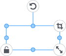

Modèles destinés à l’impression couleur/Modèles destinés à la découpe
Modèles destinés à l’impression couleur/Modèles destinés à la découpe  Modèles destinés à l’impression métallique/Modèles destinés à l’impression sur film
Modèles destinés à l’impression métallique/Modèles destinés à l’impression sur film 
Opérations sur les Images et les Caractères |
Sélectionner
Cliquez sur (ou touchez) une image ou un caractère.
Lorsque vous sélectionnez un objet, un élément d’interface s’affiche autour de celui-ci.

Déplacer, déformer, tourner
Modèles destinés à l’impression couleur/Modèles destinés à la découpe
Modèles destinés à l’impression métallique/Modèles destinés à l’impression sur film
 |
: Déplace l’objet. |
| La position est réglée automatiquement pour s’aligner avec le haut, le bas, la gauche ou la droite de l’autre objet à déplacer. Les objets ne peuvent être alignés qu’avec le même bord (exemple : haut et haut). Si vous voulez placer des objets librement, décochez la case « DIRECTIVE ». |
|
 |
: Change la forme de l’objet. |
| : Fait tourner l’objet. | |
 |
: Augmente/diminue la taille de l’objet tout en conservant son rapport longueur/largeur. |
 |
: Activez cette option si vous ne souhaitez pas modifier la position ou la taille de l’objet. |
 |
: Utilisez cette option pour masquer les parties de l’image que vous ne souhaitez pas imprimer (la fonction n’est disponible que pour les images). Lorsque vous activez cette option, un élément d’interface pour le découpage apparaît autour de l’image.
|
| : Effectuez des réglages sur des éléments tels que la luminosité de l’image et configurez les paramètres relatifs au contour. (Ceci est affiché pour les modèles destinés à l’impression métallique et pour les modèles destinés à l’impression sur film.) |